Popis projektu
V tomto projektu jsem se věnoval tvorbě 2D grafiky pro laserové řezání. Hlavním úkolem bylo navrhnout a vytvořit 2D model ovečky (SHEEP) připravený pro řezání laserem. Projekt zahrnoval návrh, digitalizaci a přípravu souborů ve formátu DXF.
Práce spočívala v návrhu různých částí ovečky - předku, boku a celkového tvaru. Každá část byla navržena tak, aby bylo možné ji vyřezat laserem a následně sestavit do 3D objektu.
 INKSCAPE - návrh loga
INKSCAPE - návrh loga
Průběh práce
-
I
Návrh konceptuNávrh tvaru ovečky, rozdělení na jednotlivé části (předek, bok) a plánování sestavení.
-
II
Tvorba 2D návrhuVytvoření vektorového návrhu v CAD softwaru s přesným rozměřením pro řezání.
-
III
Příprava pro výrobuOptimalizace křivek, kontrola rozměrů a příprava souborů pro laserové řezání.
-
IV
Export DXF souborůExport jednotlivých částí do formátu DXF kompatibilního s laserovým řezačem.
Výsledky
Výsledkem projektu je kompletní sada souborů pro laserové řezání ovečky, která kombinuje kreativní design s technickou přesností:
- ● Kompletní sada DXF souborů pro všechny části ovečky připravené k řezání
- ● Optimalizované křivky a rozměry pro přesné laserové řezání
- ● Funkční 2D návrh připravený pro 3D sestavení po vyřezání
- ● Pochopení workflow od návrhu po přípravu pro výrobu
Co jsem se naučil
- ✔ Práce s CAD softwarem pro 2D návrh
- ✔ Tvorba přesných vektorových návrhů pro výrobu
- ✔ Příprava souborů pro laserové řezání (DXF formát)
- ✔ Optimalizace návrhů pro materiálové vlastnosti
- ✔ Plánování sestavení 3D objektů z 2D částí
Galerie
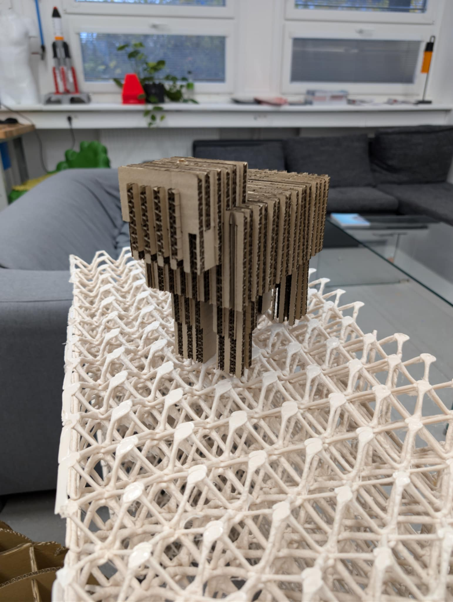
 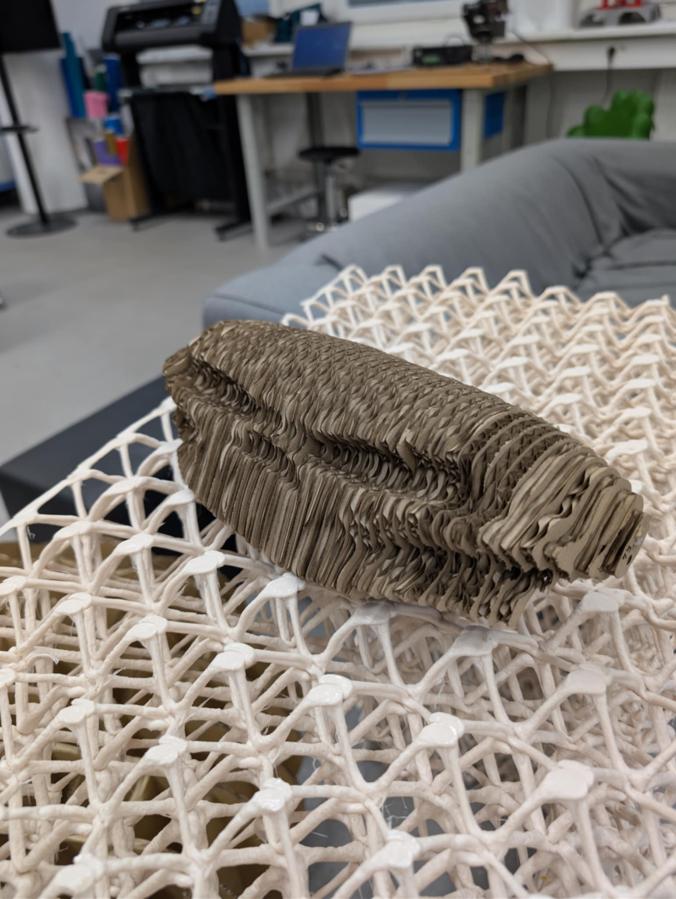
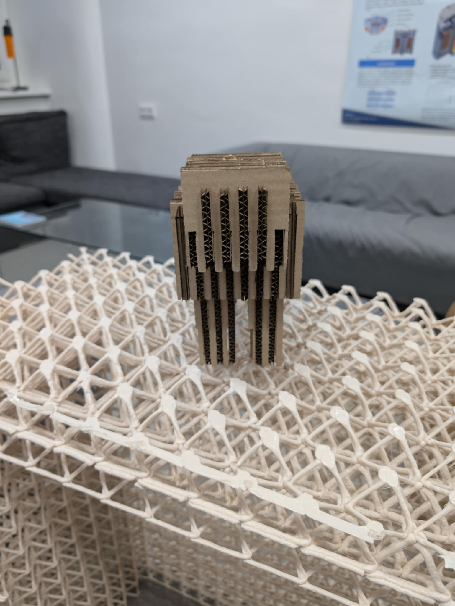
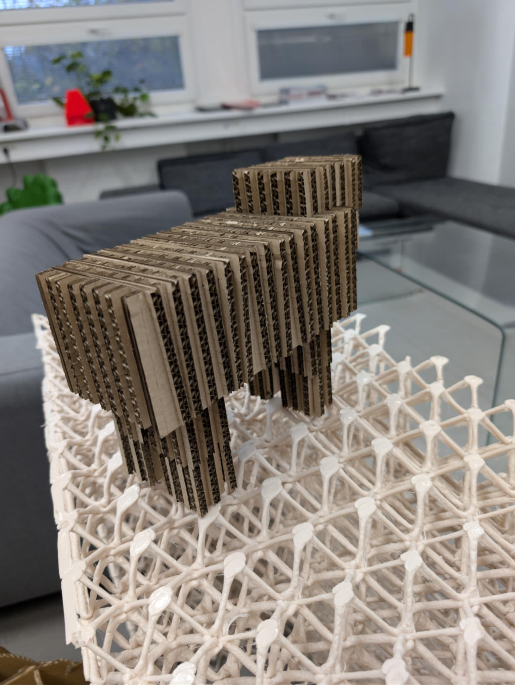
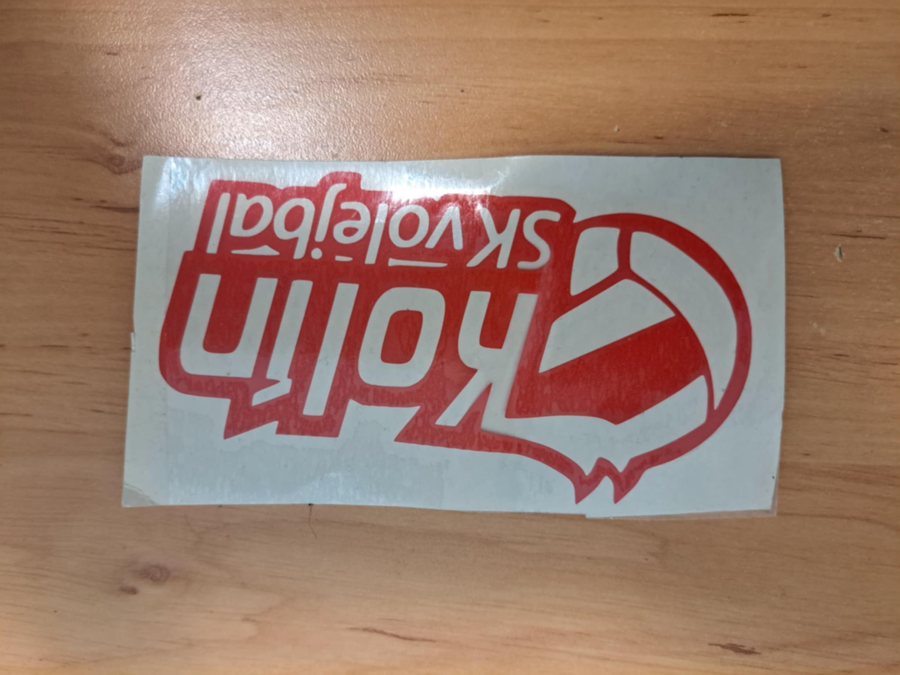
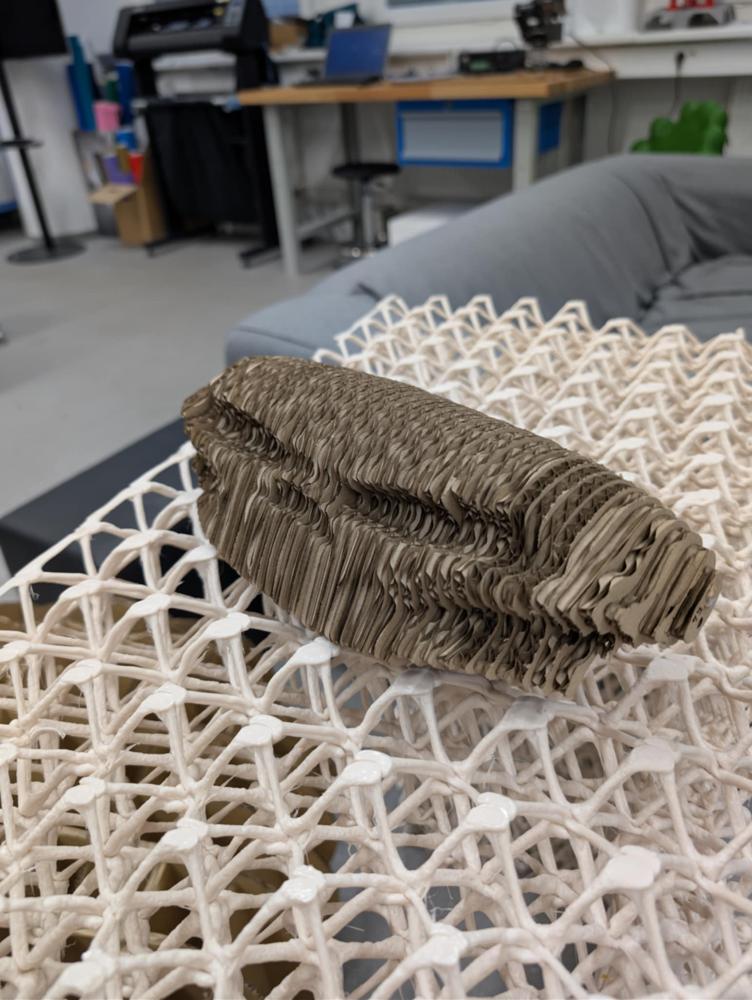
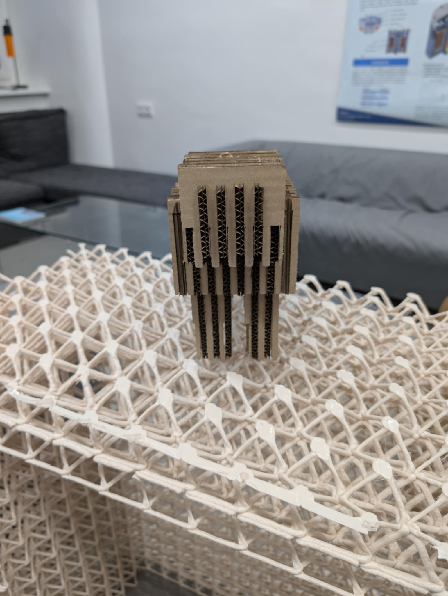
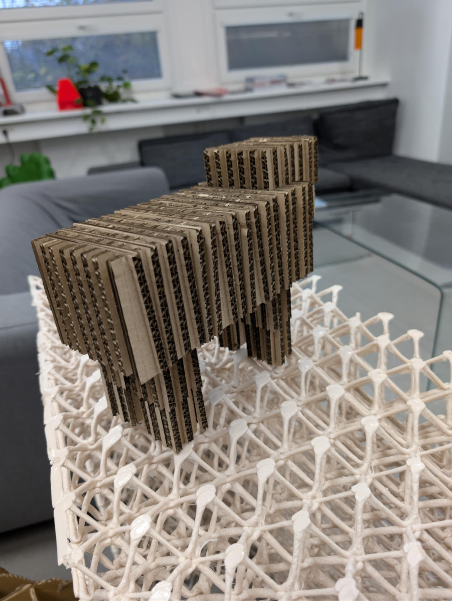
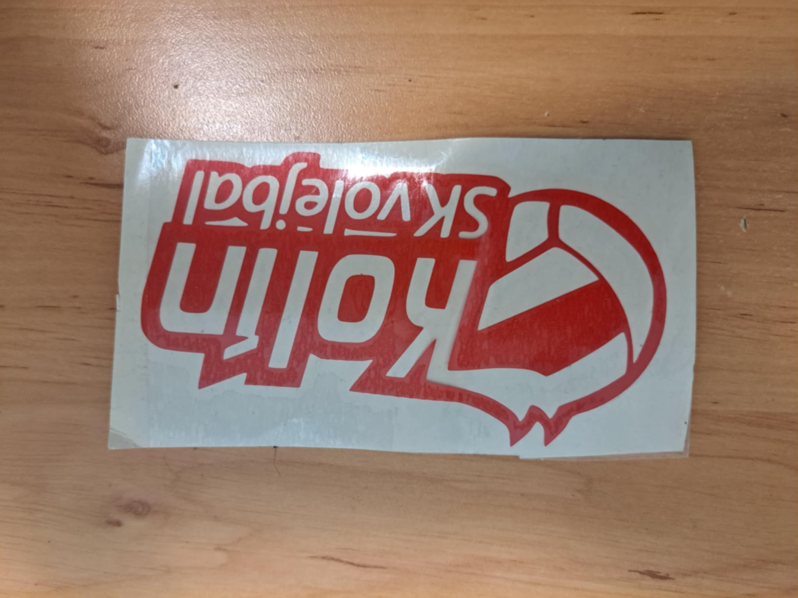
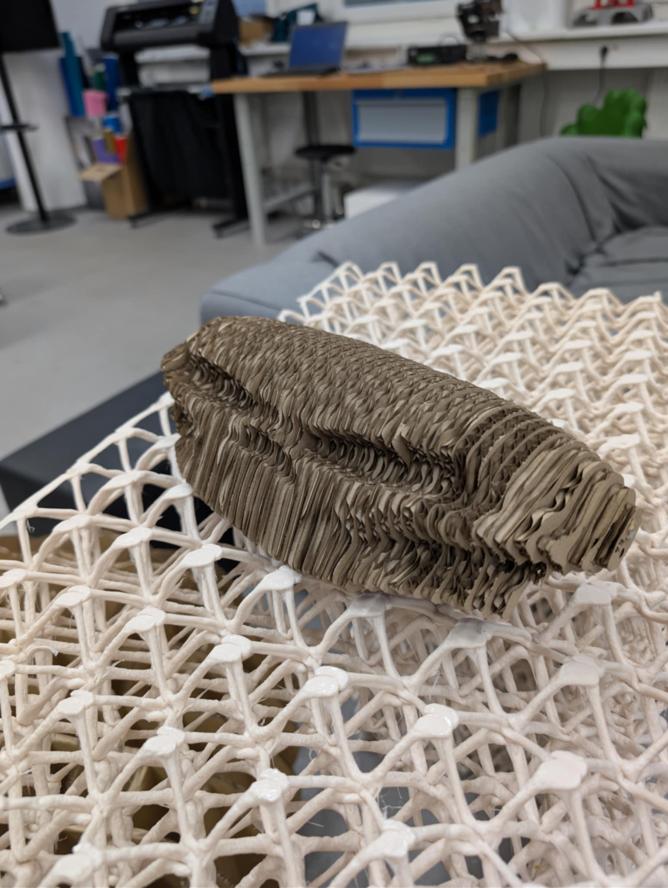
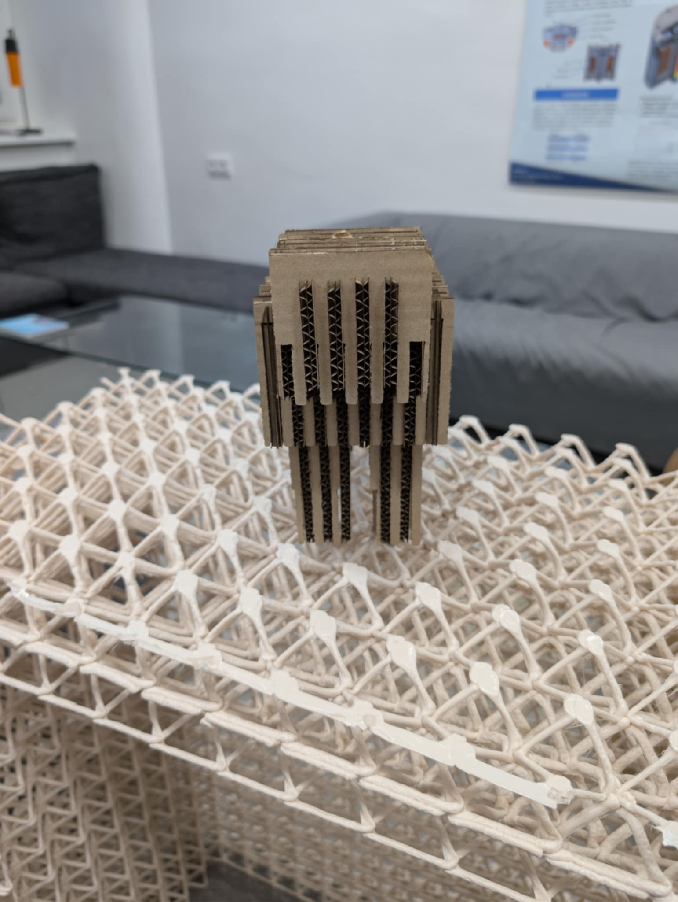
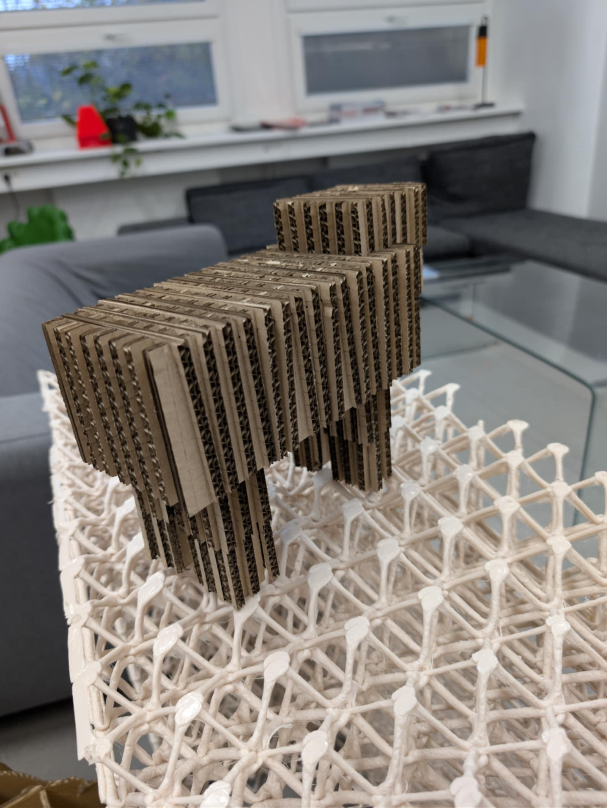
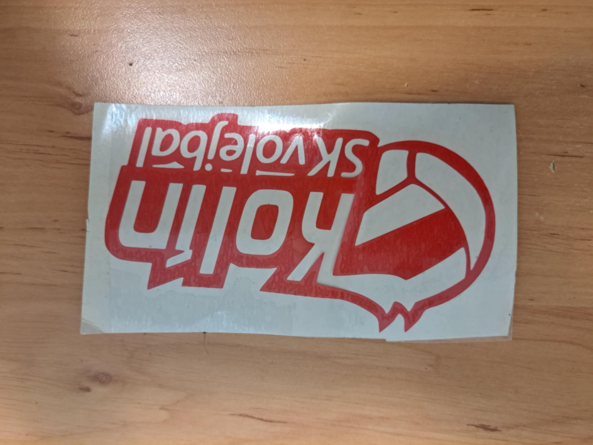